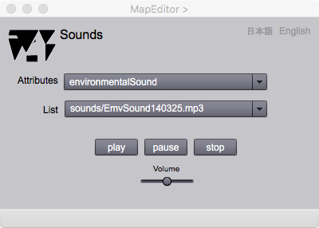

Sound listener
Introduction
This is a page to repsesent sounds as attributes of a feature.
Sound listener

Figure 1. Page for listening of sounds
FIELDS
Attributes (selectable)
A user can select an attribute name in this list.
List (selectable)
The sound as an attribute of a feature can be selected on this drop down list.
BUTTONS
play
Start the sound.
pause / replay
Pause and restart of the sound.
stop
Stopthe sound.
Volume
A slider to control loudness of the sound.
日本語
今あなたが読んでいるドキュメントが表示されます．
English
You can read the tutorial written in English.